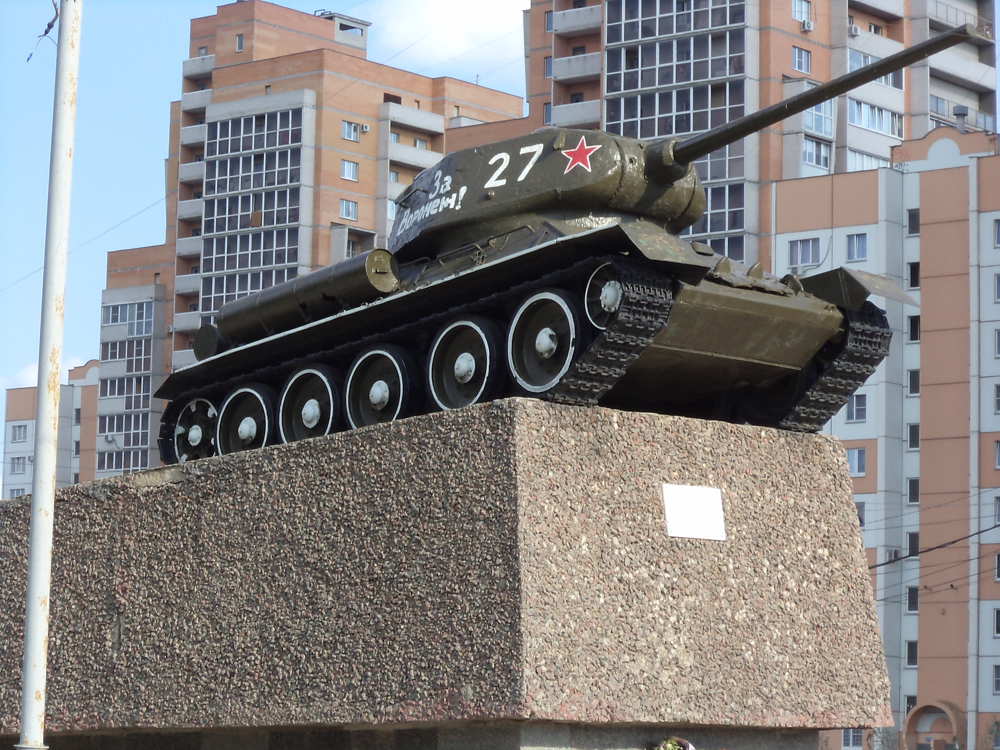
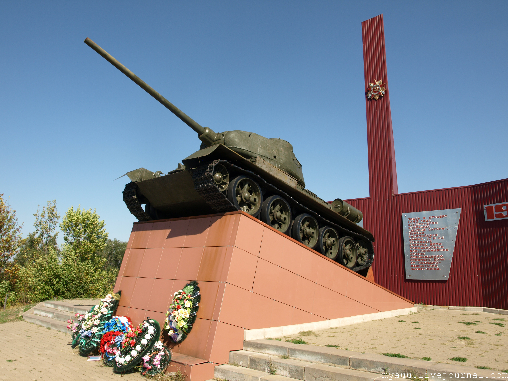

Памятники танку Т 34-85 в городах России
1. Памятник танку Т-34 в Воронеже
Открыт 7 сентября 1979 г. Расположен на въезде в город Воронеж со стороны Курска. Посвящен «танкистам – защитникам воронежской земли» (это надпись на постаменте) в память о 17, 18, 25 танковых корпусах, 5-й танковой армии. На постаменте - танк модификации Т-34-85. По рассказам очевидцев при установке он был действующим и въехал на постамент «своим ходом».

2. Танк на трассе М-4, 725 км
Т-34-85 установлен у трассы М-4 Дон. Надпись гласит:
«Здесь в декабре 1942 года, осуществляя операцию "Малый Сатурн", Первая гвардейская армия, 17 и 24 танковые корпуса вели победоносные бои, положившие начало освобождению среднего Дона от немецко-фашистских захватчиков».

Открыт в селе Репьевка в 1984 году в память о воинах-танкистах, освобождавших Репьевский район в январе 1943 года. Танк установлен Министерством обороны по ходатайству ветеранов 116-й отдельной танковой бригады.Надпись на постаменте:
«Есть память, которой не будет забвенья, и слава, которой не будет конца».